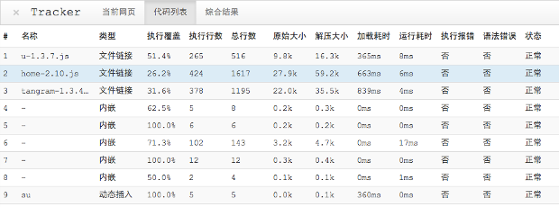
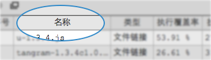
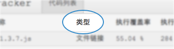
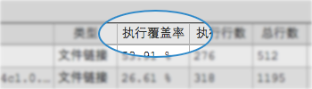
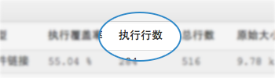
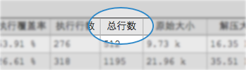
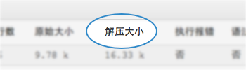
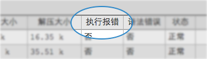
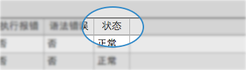
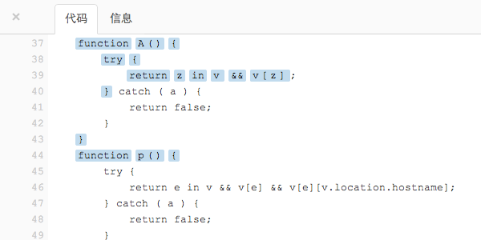

1 概述
Tracker 是一个浏览器书签栏工具，她将被运行于其他网页之后，为了协助您了解目标网页中 JavaScript 的运行情况，包括：执行覆盖率、执行行数、是否存在执行或语法错误等信息，当你对一个目标网页使用 Tracker，他们将被呈现在像下面截图所示的一个表格当中在目标网页下边。

2 应用场景
2.1 冗余代码排查
产品的迭代速度极快，我们把大部分的时间都花在实现需求上，很少能很好地从新产品开始时就好好规划以足够强大地支持将来的功能扩展（当然和个别 PM 天马行空提需求也有一定关系），加之维护人员的轮换，日积月累，很多代码已由于“历史原因”而不敢再轻易碰。此时，Tracker 能在排查冗余代码时起到很大的帮助，当您猜测某一坨恶心代码是干某件事情时，您不妨用 Tracker 验证一下。
2.2 模块化辅助分析
当您的项目代码臃肿到一定程度时，也许您和我一样，会考虑将它们做些合理拆分，以达到最佳按需加载，哪些代码是网页初始化时必须的；哪些代码是辅助功能可要可不要的；哪些代码是后序功能需要拆分成按需加载的；有了 Tracker，您能够非常方便地做这些判断。
2.3 测试用例编写参考
每一个产品，都需要有属于它的完整的测试用例，除非您并不关心它的质量。我们通常认为：完整的测试用例最起码的要求是能覆盖到您所有代码的业务逻辑（当然合理的测试还应包括功能需求以外的一些异常用例考虑），在进行测试用例的同时，配合使用 Tracker，能直观地看出哪一些业务逻辑没有被用例覆盖到。
2.4 依赖库辅助定制
为了更快速地完成开发，您也许会在项目中插入各种各样的 JS 库，然而，项目本身对这些 JS 库的利用率并不高，很多情况下只是用了它个别功能，这样导致项目产生大量的冗余代码，一定程度上影响了网页加载速度。如果您希望对这些库进行瘦身定制，Tracker 能帮到您。
3 快速开始
3.1 我只想测试一下
打开某个网页后，在浏览器的地址栏里直接输入以下代码：
javascript:void function(t,r,a,c,k){t.tracker_uid='$uid';(k=t.TrackerGlobalEvent)?k.f(r):[(k=t[a]('script')).charset='utf-8',k.src='http://www.ucren.com/'+c+'/'+c+'.js?'+Math.random(),t.documentElement.appendChild(k)]}(document,'TrackerJSLoad','createElement','tracker');
注意！ Chrome 用户要先手工敲入“javascript:”，再将以上这段粘贴进去。
3.2 我想留着以后用
我们希望您将以下链接添加到（拖放到）您的书签栏里，这样能方便您今后的使用：打开指定网页后，再点击书签栏里的 “Tracker!” 链接。
4 功能说明
4.1 资源列表
在呼出 Tracker 面板后，您将看到一个列表，这个列表显示出当前网页所用到的所有 JS 资源：
- 名称：通常为 JS 文件名，如果没有文件名，显示为中划线 “-” （如内嵌类型的脚本）； 
- 类型：表明当前 JS 资源是内嵌的、外链文件的还是运行时动态插入的； 
- 执行覆盖率：当前 JS 资源截止现在已执行的比率，计算方法 = 执行行数 / 总行数； 
- 执行行数：当前 JS 资源截止现在已执行经过的行数； 
- 总行数：当前 JS 资源解压后得到的总行数（注：不一定等于 JS 在压缩前的行数）； 
-
原始大小：当前 JS 资源所占字节数；

- 解压大小：当前 JS 资源解压后所占字节数； 
- 执行报错：当前 JS 资源截止现在执行中是否出现错误； 
-
语法错误：当前 JS 资源是否存在语法错误；

- 状态：本次分析的结果状态； 
4.2 代码面板
当您点击表格中某一行，此时在表格右侧出现一个代码框，用于显示当前 JS 资源解压后的代码，执行经过的语句或表达式用绿底黑字表示，没有经过的代码为白底。

5 兼容性
Tracker 在各浏览器中的表现排序为：Chrome, Safari, Firefox，从左到右为最优到最痤。
为了发布时能给您一个相对完美与正确的体验，直到边写着这段文字，我还一边在调试浏览器兼容性。上面列表中没有伟大的 IE 浏览器有这两方面的原因：1) 为了能用上最新潮的技术；2) 为了拥有更好的性能。上面列表没有 Opera，仅仅只是因为我还没调试通过它，以及我认为调通它的优先级并不高。：）
我相信每一位前端开发者都应安装 Chrome 浏览器，如果您还没有上述浏览器之一，我建议您立刻就开始下载 Google Chrome，我不确定它是不是前端开发者的最佳浏览器，但至少在我心目中是。
6 下载源码
Tracker 源码基于 MIT 开源许可协议 通过 github 进行托管，您可以从以下链接地址得到她：
https://github.com/ChineseDron/Tracker
您可以任意使用、复制、修改、合并、出版发布或散布，我们期望得到您的支持，您的更优秀的修改可通过 github 向我们 pull request。
鸣谢！ Tracker 采用 esprima 做为底层解析支持。
7 版本历史
| 版本 | 说明 |
|---|---|
| 1.6 | 性能优化：分析速度提高至少十倍，JS 代码框显示体验无延迟！500K JS 毫秒级打开 |
| 1.5 | 解决 script 标签 src 属性无法正确获取的问题，并改进对 seajs/requirejs 等 loader 的兼容问题 |
| 1.4 | 对 JS 代码中包含 Html 注释进行容错；修复目标位于淘宝 cdn 的脚本不能正常解析问题；调整分析进度显示 |
| 1.3 | 修复高版本 JS 系统方法与用户实现的版本存在冲突的问题 |
| 1.2 | 新增”推荐给好友“，修改反馈机制 |
| 1.1 | 重构，基于语法树加钩子，确保插入代码的正确性 |
| 1.0 | 初版 |
8 未来的功能
我们正在认真规划这个工具的未来，但这并不影响您现在就将她收藏进浏览器中，我们将永久为您保留这个链接，以保证它在将来也是可用的，未来的 Tracker 包括以下功能（暂无优先级之分），您也可以通过后面的章节”反馈“向我提出您的想法！
| # | 点子 | 说明 |
|---|---|---|
| 1 | CSS 冗余 | 计算哪些 CSS 内容是冗余的 |
| 2 | 函数关系图 | 生成可视化的全局函数或对象调用关系图 |
| 3 | 资源详情 | 在代码面板加入 tab 切换，可选”代码视图“和”简介视图“ |
| 4 | 错误详情 | 目前的版本只告诉有没有错误，但没有告诉错误是什么 |
| 5 | 当前网页综述 | 通过科学计算，给出综合结果 |
| 6 | 更多 | 期待您的参与 |
9 反馈
您可以选择一种您喜欢的方法向我反馈：
- Github Issues： https://github.com/ChineseDron/Tracker/issues/new
- 新浪微博： http://weibo.com/ucrenjs
- 邮件： dron@qq.com
Tracker 需要您帮忙推广，您可通过微博帮我们传播，举手之劳便是对 Tracker 很大的帮忙，点击下面的链接：